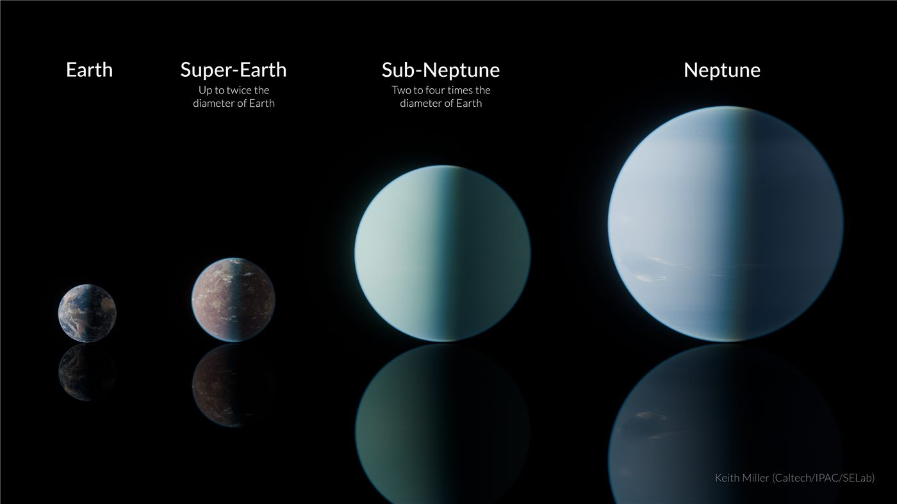

‘슈퍼지구’를 찾아라… 중국 연구, 외계행성 탐사서 잇단 성과
지구보다 크고 무거운 암석형 행성 ‘슈퍼지구’ 탐사에서 중국 연구진이 잇단 성과를 냈다. 생명체가 존재할 가능성이 있는 행성을 찾으려는 국제적 노력의 일부다.
강패산 기자 · 2026.07.23
橋중국

‘슈퍼지구’ 탐사에서 중국 연구가 연이어 돌파구를 마련했다고 환구망이 전했다. 태양계 밖 행성을 관측·분석하는 연구가 활발해지고 있다.
광고 문의 · 300×250슈퍼지구는 지구와 해왕성 사이 질량을 가진 암석형 외계행성을 가리킨다. 별과의 거리, 대기 조성에 따라 물이 액체 상태로 존재할 수 있는 후보로 주목받으며, 생명 거주 가능성 연구의 핵심 대상이 된다.
외계행성 탐사는 대형 망원경과 정밀 관측, 방대한 데이터 분석이 결합된 분야다. 각국 연구기관과 국제 협력이 데이터를 공유하며 발견을 늘려 왔고, 관측 장비의 발전이 성과를 가속하고 있다.
이런 연구는 당장의 응용보다 인류의 근본적 질문—우리는 우주에서 유일한가—에 다가서려는 기초과학의 성격이 강하다. 성과 하나하나가 방대한 우주의 지도를 조금씩 채워 간다.
華橋時報는 국경을 넘어 이뤄지는 기초과학의 진전을 인류 공동의 자산으로 본다. 우주를 향한 탐구는 특정 국가의 성취를 넘어, 모두의 지식 지평을 넓히는 일이다.
출처·참고 (사실 확인용 — 본문은 직접 재작성)
· 環球網
· 環球網